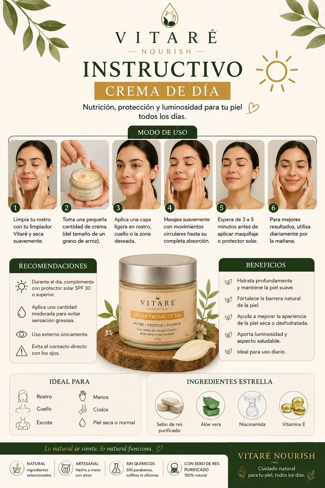
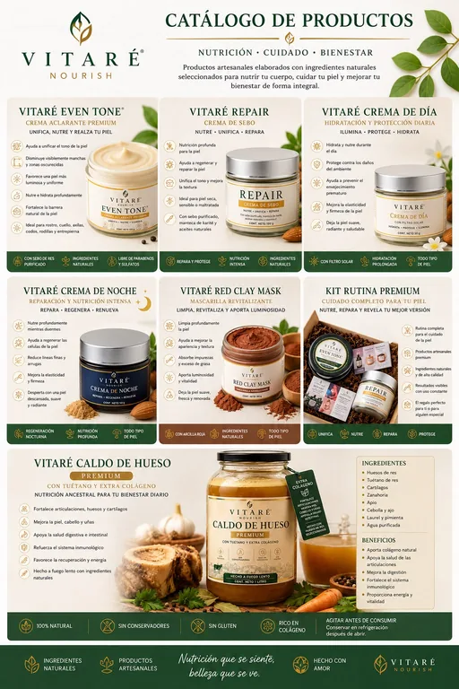
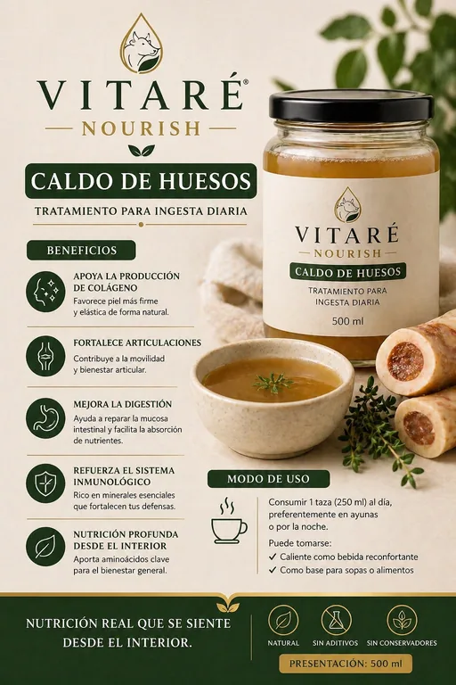
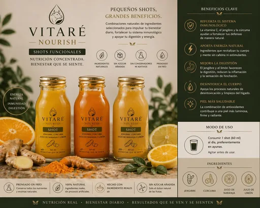
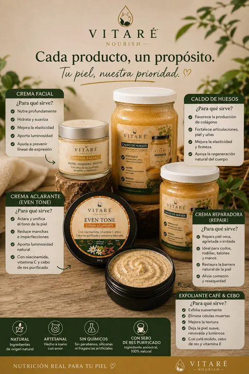

Cremas, exfoliantes y alimentos funcionales artesanales, hechos con sebo de res purificado, ingredientes naturales y cero conservadores. Nutrición que se siente, belleza que se ve.
Toma una pequeña cantidad de crema, del tamaño de un grano de arroz.
Aplica en rostro, cuello o la zona deseada.
Masajea con movimientos circulares hasta su completa absorción.
Úsala diariamente: de día con protector solar, de noche para reparar.

Lista oficial de precios sugeridos
Público, mayoreo y distribuidor
Público
De 1 a 4 piezas. Precio regular de lista.
Mayoreo
5 piezas o más, combinables entre productos.
Distribuidor oficial
10 piezas o más, o compra mínima de $5,000. Incluye material publicitario digital.
Desliza la tabla de lado para ver todos los precios →
Producto
Público
Mayoreo
Distribuidor
Crema de Día 50 g
$280
$230
$210
Crema de Día 100 g
$450
$400
$360
Crema de Noche 50 g
$300
$250
$230
Crema de Noche 100 g
$500
$450
$410
Repair 50 g
$230
$190
$170
Repair 100 g
$400
$350
$310
Even Tone 50 g
$300
$250
$230
Even Tone 100 g
$500
$450
$410
Exfoliante Facial 50 g
$360
$310
$280
Exfoliante Facial 100 g
$450
$400
$360
Exfoliante Café 100 g
$350
$300
$270
Exfoliante Corporal 100 g
$400
$350
$310
Mascarilla Café & Cebo 100 g
$360
$310
$280
Caldo de Hueso 500 ml
$150
$120
$110
Caldo de Hueso 1 litro
$280
$220
$200
Precios sugeridos en pesos mexicanos. Ganancia aproximada del distribuidor: $50 a $70 por crema de 50 g, $90 a $140 por crema de 100 g, $70 a $80 por exfoliantes y mascarillas. Envíos a todo México con empaque premium incluido.
Material de la marca
Fichas, instructivos y catálogo
Pídelos en alta resolución por WhatsApp si eres distribuidor




Si es natural, tu piel lo siente.
Escríbenos por WhatsApp para pedidos, dudas sobre qué producto es para ti, o para sumarte como distribuidor oficial en tu ciudad.